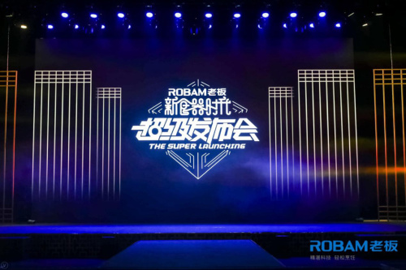
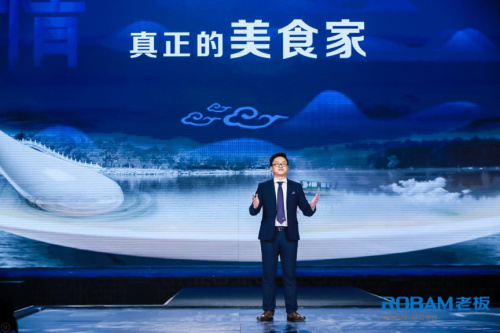
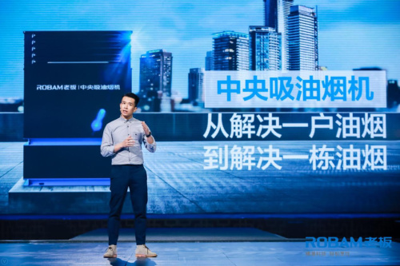

2018-03-08 新浪家居官方帐号
“民以食为天，话以食先行”。“食”一字，古往今来，大至倾国之礼、小至萧墙内事，无不借宴请谈之，可见“吃”这件事在中国人心中的地位。中华传统烹饪文化博大精深，而随着时代的变迁，烹饪文化也在悄然发生改变。
3月7日，老板电器携新品登陆深圳卫视《超级发布会》的舞台，在上海证大喜玛拉雅艺术中心大观舞台的录制现场，强势推出三款全新产品，揭开“新食器时代”的序幕，用科技为传统烹饪文化赋予新生命。在科技的基础上传承传统饮食文化，又以传统文化提升厨电产品魅力，老板电器开启“新食器时代”，赋能当代中国人的“食”与“器”。在此基础上，老板电器提出“创造中国新厨房”，立足于通过科技创新，结合对中国传统烹饪文化与当代中国生活的深入洞察，打造全新中国厨房。
作为《超级发布会》系列节目第五场，本场发布会，通过“人间烟火”、“返璞归蒸” 、“净享未来”三个篇章记录了中华民族的“美好食光”，旨在让忙碌的都市人回归厨房，通过享受烹饪的快乐，找到充满美食、安全感与爱的幸福生活。节目将于3月11日晚20: 30，在深圳卫视首播。
中国传统饮食文化的一个核心特点，是人们为其赋予了丰富的情感与社会意义。食物的作用不仅仅是果腹，也是与朋友交往，与家人相处的载体，是表达感情的媒介。不论是古代，还是当今，中国饮食文化都具备这种功能。
在老板电器新食器时代超级发布会上，得到APP专栏作家，《关系攻略》的作者熊太行发表了演讲，他提到“有很多羞于说出口的感情，都可以用做菜来表达”。有着80后型男主厨之称的余定勇与其观点异曲同工，初为人父的他与在场观众分享了为孩子做饭的故事，他讲到“在家庭中，食物是联系家庭成员的情感纽带”，以及在烹饪中尝试“与孩子共同发现他们味蕾的偏好，并且带给他们正确的饮食观念。”
随着时代的变迁，中国人表达情感的含蓄方式正在变得开放简单，厨房与烹饪也变得开放。但是饮食仍然是维系感情的纽带，老板电器希望通过自己的产品让厨房生活更为便捷、有趣，让烹饪更为轻松，从而为每个人创造一方温馨快乐的饮食天地。
只有为传统饮食文化赋予新的形式，传统才会有生命力的延续。美食配美器，本次发布会定名“新食器时代”，体现出老板电器从传统饮食文化的器物角度对厨房电器的思考。
老板电器39年来专注高端厨电，对厨房电器的中国化有着丰富的经验积累和独特的思考。所谓中国化，除了要根据中式烹饪的实际情况来研发厨电技术，还要在产品设计上尊重、传承中国传统饮食文化。
消费升级时代，中国人的饮食习惯与烹饪文化也在悄然转变，许多人不再喜欢猛火重油，而是偏爱健康有机的饮食。本次发布会的几款新品充分体现了新的饮食与烹饪趋势。
两倍风压超大吸力的油烟机让厨房环境不受油烟侵扰，通过技术创新打造一个无烟烹饪环境，让用户尽情探索厨房烹饪的乐趣；顶部不滴水的三核蒸箱让食物在保持原滋原味的同时还能拥有绝妙口感，也让蒸制食物这件事变得方便快捷；老板专业级农残净化水槽高效去除食材上的农残、激素和细菌，还有集合老板专业级农残净化水槽、洗碗机、净水机于一体的专业厨房洗净系统，为中国厨房提供了厨房洗净整体解决方案。在传承传统饮食文化的基础上，老板电器用精湛的厨电科技为其赋予新的生命。
另外，本次发布会上，王强还提到老板电器的颠覆性产品——中央吸油烟机。据了解，我国厨房每天向大气排放4000亿立方米油烟，PM2.5的污染气体，对京津冀雾霾天气的污染气体的占比达21%。为此老板电器发明了在每个公共烟道上安装一个中央吸油烟机，通过一个8000立方米风量的离心风机和净化模块统一净化、进行无害处理之后再排出去，净化效率可达90%以上。这不仅是油烟机的一次颠覆创新，更是用实际行动表达对绿色健康环境的关注和态度。
纵观整场发布会，老板电器的一系列的新品与全新的理念无时无刻不在透露着一个信息：老板电器作为行业的引领者，不仅是厨电产品的迭代者，同时也是中华饮食文化的传播者。